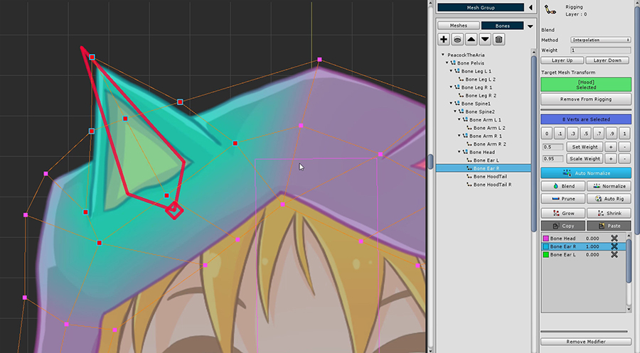

AnyPortrait > 시작하기 > 2.5. Rigging 모디파이어 사용하기
2.5. Rigging 모디파이어 사용하기
1.0.0
본 애니메이션을 위해서는 리깅(Rigging)이라는 과정이 필수적입니다.
리깅은 "버텍스를 본에 연결하는 것"이라고 간단히 요약해볼 수 있습니다.

버텍스에 "본과 연결하는 가중치(Weight)"를 입력하여 본의 움직임에 따라가도록 하는 것이 핵심입니다.
왼쪽 그림에서 모든 버텍스들이 "Bone 1 : 1.0"이라는 가중치를 가지고 있습니다.
따라서 녹색 본(Bone 2)의 움직임을 따라가지 않습니다.
오른쪽 그림은 버텍스의 가중치가 점점 "Bone 2"로 증가하고 있습니다.
그래서 녹색 본의 움직임에 부드럽게 따라가는 것을 볼 수 있습니다.
>TXT
즉, 리깅이라는 작업은 "버텍스 + 본"의 연결 가중치를 입력하는 것입니다.
Rigging 모디파이어를 추가합니다.
(1) Add Modifier 버튼을 눌러서 (2) Rigging 모디파이어를 선택한 뒤 추가합니다.

먼저 머리의 후드를 수정합니다.
(1) Hood 메시를 선택한 뒤, (2) Add to Rigging 버튼을 눌러 모디파이어에 메시를 등록합니다.

화면 왼쪽 아래의 Binding 버튼을 눌러서 리깅 작업을 시작합니다.
리깅 작업에 앞서서 리깅 툴 UI에 대한 설명입니다.
1. 메시 등록/해제 : 메시를 리깅 모디파이어에 등록하거나 해제합니다.
2. 가중치 직접 지정 : 버튼의 값으로 가중치가 지정됩니다.
3. 가중치 툴 : 가중치를 지정하는 툴들입니다.
Set Weight : 왼쪽에 작성된 숫자만큼 가중치를 지정합니다.
Set Weight +/- : 0.05 단위로 가중치를 더하거나 뺍니다.
Scale Weight : 왼쪽에 작성된 숫자만큼 가중치를 곱합니다.
Scale Weight +/- : 가중치에 1.05를 곱하거나(+ 버튼), 0.95를 곱합니다. (-버튼)
4. 가중치 보조 툴 : 선택된 버텍스의 가중치를 지정할 때 도움을 주는 툴입니다.
Auto Normalize : 이 기능이 활성된 상태에서는 가중치 합이 1로 보정됩니다.
Blend : 버텍스의 가중치를 주변 버텍스 값과 적절히 섞어서 부드럽게 만듭니다.
Normalize : 가중치 합이 1이 되도록 보정합니다.
Prune : 매우 낮은 가중치 값을 가지는 본 정보를 삭제합니다.
Auto Rig : 등록된 본 정보를 바탕으로 자동으로 리깅을 합니다.
5. Grow / Shrink : 버텍스를 더 선택하거나 제외 시켜서 범위를 조절합니다.
6. Copy / Paste : 선택된 버텍스의 리깅 정보를 복사하거나 붙여넣습니다.
7. 본 리깅 정보 : 리깅에 등록된 본과 리깅 값입니다. X 버튼을 눌러서 본을 제외시킬 수 있습니다. 이 화면에서도 직접 본을 선택할 수 있습니다.

화면 하단의 UI에서 리깅 가중치를 시각적으로 표시하는 4가지 모드를 선택할 수 있습니다.
본 색상을 사용할지 여부를 결정하거나, 텍스쳐를 같이 표시할지 여부를 선택할 수 있습니다.
(1) 모든 버텍스를 선택한 뒤, (2) 머리 본("Bone Head")를 선택합니다.
본이 선택이 안된다면 선택 잠금(Selection Lock)을 해제하거나 오른쪽 메뉴에서 선택하세요.

모든 버텍스의 가중치를 Bone Head에 대해서 1로 지정합니다.
메시의 색상이 머리 본 색상과 유사하게 바뀌는 것을 볼 수 있습니다.

(1) 잠시 선택 잠금(Selection Lock)을 풀고 (2) 후드 귀(Bone Ear R)를 선택합니다.
선택 잠금을 풀지 않는 경우 오른쪽 메뉴에서 선택하세요.
버텍스가 선택된 상태에서 (3) 가중치를 0.5로 지정합니다.
"Bone Ear R" 본의 리깅 정보가 등록되는 것을 볼 수 있습니다.

반대편 귀에 대해서도 동일하게 가중치를 지정합니다.

다시 머리(Bone Head)를 선택합니다. 모든 버텍스를 선택하고 가중치를 1로 지정합니다.

후드 귀(Bone Ear R)를 선택한 뒤, 그 주변 버텍스를 선택하고 가중치를 1로 지정합니다.

귀 주위에만 가중치가 적용되어 색상이 바뀝니다.

같은 방식으로 맞은편 귀에 대해서도 가중치를 지정해줍니다.
리깅은 한번에 완료하기 어려운 작업입니다.
가중치를 지정하더라도 실제로 본을 움직여보면 어색한 점이 나타나기 쉽습니다.
따라서 Rigging 모디파이어에서는 "본을 임시로 움직여볼 수 있는 기능(Pose Test)"을 제공합니다.
Pose Test 기능을 이용하여 가중치가 제대로 적용되었는지 확인하고 수정해보도록 합시다.

먼저 본이 화면에 나타나도록 해야합니다.
(1) 본이 "색이 채워진 상태"로 나타나도록 합니다.
(2) Pose Test 버튼을 누릅니다.
본을 선택하여 자유롭게 움직여볼 수 있습니다.
제대로 리깅이 되었는지 확인해보세요.
현재 상태의 리깅에서는 결과가 매끄럽지 않습니다.
이를 부드럽게 만들고 문제가 생기는 부분을 수정하는 작업이 필요합니다.
Pose Test 버튼을 눌러 비활성한 뒤 다시 리깅을 수정합니다.
(1) 귀 주위의 버텍스들을 모두 선택해줍시다.

(2) Blend 버튼을 몇번 눌러서 가중치 값을 부드럽게 만들어줍니다.
(가중치 값을 보기 편하게 "Bone Color Off + Texture Off" 상태로 바꾸었습니다.)

이전보다 가중치 값이 완만하게 분포된 것을 볼 수 있습니다.

이제 다시 테스트를 해봅시다.
(1) Pose Test 모드를 켭니다.
(2) 귀를 기울여서 Blend된 리깅이 잘 적용되었는지 확인해봅니다.
이 샘플에서는 한쪽 귀을 기울이면 반대편도 같이 움직이는 것을 볼 수 있습니다.
반대편 귀쪽의 버텍스가 움직이지 않아야 한다고 가정하고 수정을 해보겠습니다.
(리깅의 경우 디자이너의 의도에 따라 작업이 다르게 진행됩니다.)

(3) 머리 중앙의 버텍스를 선택을 합니다.

(4) 머리(Bone Head)를 선택하고, (5) Set Weight + 버튼을 몇번 눌러서 가중치를 추가합니다.
(6) 귀 한쪽의 버텍스들을 선택한 뒤, (7) 맞은편 귀(Bone Ear R 또는 L)를 선택합니다.
가중치가 중심을 넘어서 적용된 것을 볼 수 있습니다.

(8) 가중치 0을 지정합니다.
맞은 편 귀와 버텍스에 대해서도 동일하게 작업해줍니다.
이제 다른 메시들도 리깅 모디파이어에 등록합니다.
얼굴의 메시들은 머리(Bone Head) 한개에만 리깅을 등록합니다.

그 외의 메시들은 Pose Test를 적절히 사용해가면서 리깅을 해줍니다.
아래의 스크린샷은 각각의 본에 대한 리깅 결과입니다.
이를 참고하시어 리깅을 하시면 되겠습니다.